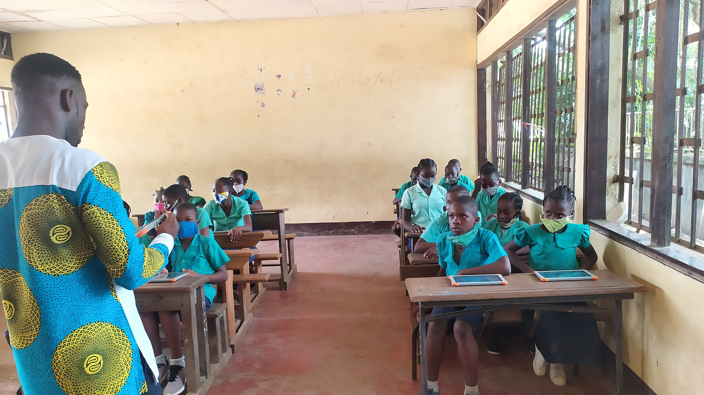

Donors
Give to a need you can see.
- Browse verified homes and their specific needs
- Pledge from 500 XAF toward a need and watch it fill up
- Message the home directly, or stay anonymous
- Keep all your pledges in one place

CAM Orphanage Connect brings verified children's homes together with donors and partner organizations, so help reaches real needs, openly and safely.
Free to join. Every orphanage is checked by our team before it appears.
Live figures from the platform.
Donors, children's homes and partner organizations each get their own space, built around what they need to do.
Give to a need you can see.

Be seen. Be supported.

Multiply your impact.
A home creates its profile, adds its official registration number and uploads its documents.
We review every application and ask for more information when something is missing.
Approved supporters browse verified homes and pledge to the needs that matter to them.
Built-in messages connect homes with their supporters, with the team looking after safety.
Giving should feel safe, and running a children's home should not mean exposing the children. We built the platform around that.
Orphanages share their registration number and certificates. Our team reviews them before anything goes public.
Donors are approved and partners are verified before they can browse homes or send messages.
The team can read direct chats between homes and supporters and step in when needed.
Every need shows how much has been pledged against its goal.


Any officially registered children's home in Cameroon can join, in any region. The platform is built around how people here live and give.
Orphanages can tell their story in English or in French.
Donors can note MTN Mobile Money or Orange Money as their preferred way to give.
Homes are listed by town and region, so supporters can find the community they care about.
Behind every profile is a place where people get up early, cook, fetch water, study and play.


Yes. Creating an account as a donor, orphanage or partner costs nothing.
Not yet. A pledge is a promise recorded against a specific need, so the orphanage and our team can see support building up. You and the orphanage can then agree how the gift is sent using the built-in messages, and the team is there to help.
Every orphanage must give its official registration number and upload verification documents. Our team reviews them, and may ask for more information, before the orphanage appears to donors.
To keep children’s homes safe. Only accounts our team has reviewed can browse orphanage profiles and message them.
It is free to join. Choose the way you want to help and create your account in a few minutes.